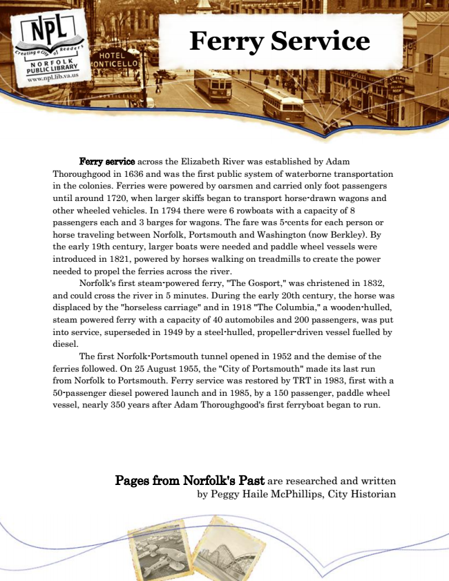

Ferry Service
Ferry service across the Elizabeth River was established by Adam Thoroughgood in 1636 and was the first public system of waterborne transportation in the colonies. Ferries were powered by oarsmen and carried only foot passengers until around 1720, when larger skiffs began to transport horse-drawn wagons and other wheeled vehicles. In 1794 there were 6 rowboats with a capacity of 8 passengers each and 3 barges for wagons. The fare was 5-cents for each person or horse traveling between Norfolk, Portsmouth and Washington (now Berkley). By the early 19th century, larger boats were needed and paddle wheel vessels were introduced in 1821, powered by horses walking on treadmills to create the power needed to propel the ferries across the river.
Norfolk's first steam-powered ferry, "The Gosport," was christened in 1832, and could cross the river in 5 minutes. During the early 20th century, the horse was displaced by the "horseless carriage" and in 1918 "The Columbia," a wooden-hulled, steam powered ferry with a capacity of 40 automobiles and 200 passengers, was put into service, superseded in 1949 by a steel-hulled, propeller-driven vessel fuelled by diesel.
The first Norfolk-Portsmouth tunnel opened in 1952 and the demise of the ferries followed. On 25 August 1955, the "City of Portsmouth" made its last run from Norfolk to Portsmouth. Ferry service was restored by TRT in 1983, first with a 50-passenger diesel powered launch and in 1985, by a 150 passenger, paddle wheel vessel, nearly 350 years after Adam Thoroughgood's first ferryboat began to run.
Pages from Norfolk's Past are researched and written by Peggy Haile McPhillips, City Historian